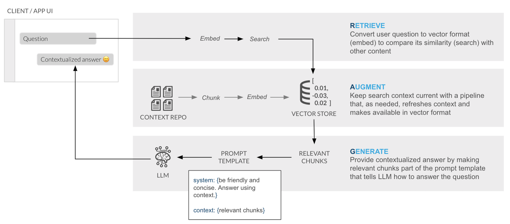
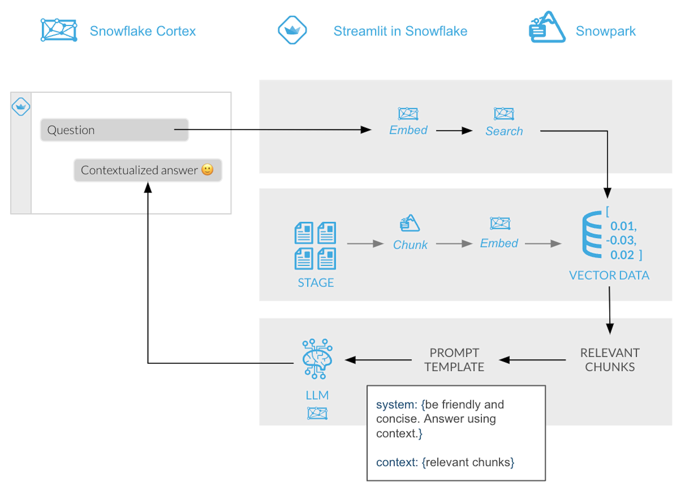

In this quickstart we will show you how to quickly and securely build a document search assistant using vector embeddings in Cortex AI without having to build integrations, manage any infrastructure or deal with security concerns with data moving outside of the Snowflake governance framework.
Along the way, we will also share tips on how you could turn what may seem like a prototype into a production pipeline by showing you how to automatically process new documents as they are uploaded as well as learn about relevant Snowflake functionality to consider for additional enhancements.
What You Will Build
The final product includes an application that lets users test how the LLM responds with and without the context document(s).

RAG Overview

RAG Overview in Snowflake

What You Will Learn
- How to create functions that use Python libraries using Snowpark
- How to generate embeddings, run semantic search and use LLMs using serverless functions in Snowflake Cortex
- How to build a front-end with Python using Streamlit in Snowflake
- Optional: How to automate data processing pipelines using directory tables, Streams and Task
Prerequisites
- Snowflake account in a cloud region where Snowflake Cortex LLM functions are supported
- Check LLM availability to help you decide where you want to create your snowflake account
- A Snowflake account with Anaconda Packages enabled by ORGADMIN.
- Snowflake Cortex vector functions for semantic distance calculations along with VECTOR as a data type enabled.
In Snowflake, databases and schemas are used to organize and govern access to data and logic. Let´s start by getting a few documents locally and then create a database that will hold the PDFs, the functions that will process (extract and chunk) those PDFs and the table that will hold the text embeddings.
Step 1. Download example documents
Let's download a few documents we have created about bikes. In those documents we have added some very specific information about those ficticious models. You can always add more or use a different type of documents that you want to try asking questions against. At the end we are going to test how the LLM responds with and without access to the information in the documents.
- Mondracer Infant Bike
- Premium Bycycle User Guide
- Ski Boots TDBootz Special
- The Ultimate Downhill Bike
NOTE: This Quickstart uses the PyPDF library to extract text from the documents above. If you swap out these documents with others, make sure they are text based PDFs. For example, if you have scanned PDFs (e.g. images), you will need to add a step to convert the image to text using a library like tesserocr. Similarly, if you have password protected PDFs, you will need to use a different Python library.
Step 2. Open a new Worksheet
Relevant documentation: Creating Snowflake Worksheets.
Step 3. Create a database, schema and a warehouse
Run the following code inside your newly created worksheet
CREATE DATABASE CC_QUICKSTART_CORTEX_DOCS;
CREATE SCHEMA DATA;
USE CC_QUICKSTART_CORTEX_DOCS.DATA;
CREATE OR REPLACE WAREHOUSE XS_WH WAREHOUSE_SIZE = XSMALL;
USE WAREHOUSE XS_WH;
Relevant documentation: Database and Schema management
Step 4. Create a table function that will read the PDF documents and split them in chunks
We will be using the PyPDF2 and Langchain Python libraries to accomplish the necessary document processing tasks. Because as part of Snowpark Python these are available inside the integrated Anaconda repository, there are no manual installs or Python environment and dependency management required.
Relevant documentation:
Create the function by running the following query inside your worksheet
create or replace function pdf_text_chunker(file_url string)
returns table (chunk varchar)
language python
runtime_version = '3.9'
handler = 'pdf_text_chunker'
packages = ('snowflake-snowpark-python','PyPDF2', 'langchain')
as
$$
from snowflake.snowpark.types import StringType, StructField, StructType
from langchain.text_splitter import RecursiveCharacterTextSplitter
from snowflake.snowpark.files import SnowflakeFile
import PyPDF2, io
import logging
import pandas as pd
class pdf_text_chunker:
def read_pdf(self, file_url: str) -> str:
logger = logging.getLogger("udf_logger")
logger.info(f"Opening file {file_url}")
with SnowflakeFile.open(file_url, 'rb') as f:
buffer = io.BytesIO(f.readall())
reader = PyPDF2.PdfReader(buffer)
text = ""
for page in reader.pages:
try:
text += page.extract_text().replace('\n', ' ').replace('\0', ' ')
except:
text = "Unable to Extract"
logger.warn(f"Unable to extract from file {file_url}, page {page}")
return text
def process(self,file_url: str):
text = self.read_pdf(file_url)
text_splitter = RecursiveCharacterTextSplitter(
chunk_size = 4000, #Adjust this as you see fit
chunk_overlap = 400, #This let's text have some form of overlap. Useful for keeping chunks contextual
length_function = len
)
chunks = text_splitter.split_text(text)
df = pd.DataFrame(chunks, columns=['chunks'])
yield from df.itertuples(index=False, name=None)
$$;
Step 5. Create a Stage with Directory Table where you will be uploading your documents
create or replace stage docs ENCRYPTION = (TYPE = 'SNOWFLAKE_SSE') DIRECTORY = ( ENABLE = true );
Step 6. Upload documents to your staging area
- Select Data on the left of Snowsight
- Click on your database CC_QUICKSTART_CORTEX_DOCS
- Click on your schema DATA
- Click on Stages and select DOCS
- On the top right click on the +Files botton
- Drag and drop the two PDF files you downloaded

Step 7. Check files has been successfully uploaded
Run this query to check what documents are in the staging area
ls @docs;

In this step we are going to leverage our document processing functions to prepare documents before turning the text into embeddings using Snowflake Cortex. These embeddings will be stored in a Snowflake Table using the new native VECTOR data type.

Step 1. Create the table where we are going to store the chunks and vectors for each PDF. Note here the usage of the new VECTOR data type:
create or replace TABLE DOCS_CHUNKS_TABLE (
RELATIVE_PATH VARCHAR(16777216), -- Relative path to the PDF file
SIZE NUMBER(38,0), -- Size of the PDF
FILE_URL VARCHAR(16777216), -- URL for the PDF
SCOPED_FILE_URL VARCHAR(16777216), -- Scoped url (you can choose which one to keep depending on your use case)
CHUNK VARCHAR(16777216), -- Piece of text
CHUNK_VEC VECTOR(FLOAT, 768) ); -- Embedding using the VECTOR data type
Step 2. Use the function previously created to process the PDF files, extract the chunks and created the embeddings. Insert that info in the table we have just created:
insert into docs_chunks_table (relative_path, size, file_url,
scoped_file_url, chunk, chunk_vec)
select relative_path,
size,
file_url,
build_scoped_file_url(@docs, relative_path) as scoped_file_url,
func.chunk as chunk,
SNOWFLAKE.CORTEX.EMBED_TEXT_768('e5-base-v2',chunk) as chunk_vec
from
directory(@docs),
TABLE(pdf_text_chunker(build_scoped_file_url(@docs, relative_path))) as func;
Explanation of the previous code:
The insert statement is reading the records from the docs_stream stream and it is generating a table calling the table function pdf_text_chunker, where we get the chunk that is the piece of text from the PDF.
The chunk text is passed to Snowflake Cortex to generate the embeddings with this code:
SNOWFLAKE.CORTEX.EMBED_TEXT_768('e5-base-v2',chunk) as chunk_vec
That code is calling the embed_text function using the e5-base-v2 transformer and returning an embedding vector.
If you check the docs_chunks_table table, you should see the PDFs has been processed
select relative_path, size, chunk, chunk_vec from docs_chunks_table limit 5;

And you can see the CHUNK_VEC columns that contains the embedings using the VECTOR data type.
Your PDF files has been chunked and each chunk has an embedding. We can check how many chunks we got for each file using this query
select relative_path, count(*) as num_chunks
from docs_chunks_table
group by relative_path;

After completing all the steps in this section you should see the following objects in your database:
- The DOCS_CHUNKS_TABLE that contains the text and the vectors
- The DOCS Stage with your PDF files
- The PDF_TEXT_CHUNKER function that extracts and chunk the text from the PDF files

To make it easy for anyone to ask questions against the vector store, let's create a fairly simple front-end using Streamlit. As part of the app, we will provide the end-user with a toggle that allows testing of LLM responses with and without access to the context to observe the differences.
Streamlit in Snowflake allows you to run the app and share it with other Snowflake users within the same account. This ensures data remains secure and protected and is only available to users that meet your role-based access policies.
Relevant documentation: Introduction to Streamlit in Snowflake
- Click on the Streamlit tab on the left
- Clickn on + Streamlit App button on the right
- Give the App a name (CC_CORTEX_APP in my example)
- Select the warehouse to run the App (a Small WH will be enough)
- Choose the CC_QUICKSTART_CORTEX_DOCS database and DATA schema

The Streamlit app comes with a default template you can delete and replace with this code which includes the front-end elements:
- Table with list of available documents
- Toggle to choose to use documents as context
- Question input box
And also includes the retrieval and generation logic:
- Function to calculate distance between question and text chunks to retrieve top result
- Prompt template that instructs LLM how to answer using relevant chunks
import streamlit as st # Import python packages
from snowflake.snowpark.context import get_active_session
session = get_active_session() # Get the current credentials
import pandas as pd
pd.set_option("max_colwidth",None)
num_chunks = 3 # Num-chunks provided as context. Play with this to check how it affects your accuracy
def create_prompt (myquestion, rag):
if rag == 1:
cmd = """
with results as
(SELECT RELATIVE_PATH,
VECTOR_COSINE_SIMILARITY(docs_chunks_table.chunk_vec,
SNOWFLAKE.CORTEX.EMBED_TEXT_768('e5-base-v2', ?)) as similarity,
chunk
from docs_chunks_table
order by similarity desc
limit ?)
select chunk, relative_path from results
"""
df_context = session.sql(cmd, params=[myquestion, num_chunks]).to_pandas()
context_lenght = len(df_context) -1
prompt_context = ""
for i in range (0, context_lenght):
prompt_context += df_context._get_value(i, 'CHUNK')
prompt_context = prompt_context.replace("'", "")
relative_path = df_context._get_value(0,'RELATIVE_PATH')
prompt = f"""
'You are an expert assistance extracting information from context provided.
Answer the question based on the context. Be concise and do not hallucinate.
If you don´t have the information just say so.
Context: {prompt_context}
Question:
{myquestion}
Answer: '
"""
cmd2 = f"select GET_PRESIGNED_URL(@docs, '{relative_path}', 360) as URL_LINK from directory(@docs)"
df_url_link = session.sql(cmd2).to_pandas()
url_link = df_url_link._get_value(0,'URL_LINK')
else:
prompt = f"""
'Question:
{myquestion}
Answer: '
"""
url_link = "None"
relative_path = "None"
return prompt, url_link, relative_path
def complete(myquestion, model_name, rag = 1):
prompt, url_link, relative_path =create_prompt (myquestion, rag)
cmd = f"""
select SNOWFLAKE.CORTEX.COMPLETE(?,?) as response
"""
df_response = session.sql(cmd, params=[model_name, prompt]).collect()
return df_response, url_link, relative_path
def display_response (question, model, rag=0):
response, url_link, relative_path = complete(question, model, rag)
res_text = response[0].RESPONSE
st.markdown(res_text)
if rag == 1:
display_url = f"Link to [{relative_path}]({url_link}) that may be useful"
st.markdown(display_url)
#Main code
st.title("Asking Questions to Your Own Documents with Snowflake Cortex:")
st.write("""You can ask questions and decide if you want to use your documents for context or allow the model to create their own response.""")
st.write("This is the list of documents you already have:")
docs_available = session.sql("ls @docs").collect()
list_docs = []
for doc in docs_available:
list_docs.append(doc["name"])
st.dataframe(list_docs)
#Here you can choose what LLM to use. Please note that they will have different cost & performance
model = st.sidebar.selectbox('Select your model:',(
'mixtral-8x7b',
'snowflake-arctic',
'mistral-large',
'llama3-8b',
'llama3-70b',
'reka-flash',
'mistral-7b',
'llama2-70b-chat',
'gemma-7b'))
question = st.text_input("Enter question", placeholder="Is there any special lubricant to be used with the premium bike?", label_visibility="collapsed")
rag = st.sidebar.checkbox('Use your own documents as context?')
print (rag)
if rag:
use_rag = 1
else:
use_rag = 0
if question:
display_response (question, model, use_rag)
Explanation
Let´s go step by step what that code is doing:
create_prompt() receives a question as an argument and whether it has to use the context documents or not. This can be used to compare how the LLM responds when using the RAG framework vs. using existing knowledge gained during pre-training.
When the box is checked, this code is going embed the question and look for the PDF chunk with the closest similarity to the question being asked. We can limit the number of chunks we want to provide as a context. That text will be added to the prompt as context and a link to download the source of the answer is made available for the user to verify the results.
cmd = """
with results as
(SELECT RELATIVE_PATH,
VECTOR_COSINE_SIMILARITY(docs_chunks_table.chunk_vec,
SNOWFLAKE.CORTEX.EMBED_TEXT_768('e5-base-v2', ?)) as similarity,
chunk
from docs_chunks_table
order by similarity desc
limit ?)
select chunk, relative_path from results
"""
df_context = session.sql(cmd, params=[myquestion, num_chunks]).to_pandas()
So the code is doing a similarity search to look for the closest chunk of text and provide it as context in the prompt:

The next section worth calling out is the complete() function which combines the LLM, the prompt template and whether to use the context or not to generate a response which includes a link to the asset from which the answer was obtained.
def complete(myquestion, model_name, rag = 1):
prompt, url_link, relative_path =create_prompt (myquestion, rag)
cmd = f"""
select SNOWFLAKE.CORTEX.COMPLETE(?,?) as response
"""
df_response = session.sql(cmd, params=[model_name, prompt]).collect()
return df_response, url_link, relative_path

Deploy and share your AI-powered app
Streamlit in Snowflake provides a side-by-side editor and preview screen that makes it easy and fast to iterate and visalize changes.

In the app, we can see the documents we had uploaded previously and can be used to ask questions while trying multiple options using interactive widgets:
- LLM dropdown: Evaluate the response to the same question from different LLMs available in Snowflake Cortex.
- Context toggle: Check the box to receive answer with RAG. Uncheck to see how LLM answers without access to the context.
To test out the RAG framework, here a few questions you can ask and then use the interactive widgets to compare the results when using a different LLM or when choosing to get a response without the context. This is related to very specific information that we have added into the documents and that is very unique to our products.
- Is there any special lubricant to be used with the premium bike?
- What is the warranty for the premium bike?
- Does the mondracer infant bike need any special tool?
- Is there any temperature to be considered with the premium bicycle?
- What is the temperature to store the ski boots?
- Where have the ski boots been tested and who tested them?
Other things to test
In this example we have just decided a fixed format for chunks and used only the top result in the retrieval process. This blog provides some considerations about settings in the chunking function in our Snowpark UDTF.
text_splitter = RecursiveCharacterTextSplitter(
chunk_size = 4000, #Adjust this as you see fit
chunk_overlap = 400, #This let's text have some form of overlap. Useful for keeping chunks contextual
length_function = len
)
You can also try different instructions in your prompt and see how the responses may vary. Simply replace any of the text and run the app again.
prompt = f"""
'You are an expert assistance extracting information from context provided.
Answer the question based on the context. Be concise and do not hallucinate.
If you don´t have the information just say so.
Context: {prompt_context}
Question:
{myquestion}
Answer: '
"""
You can also try to change the number of chunks that are provided as context by simply modifying this value:
num_chunks = 3
In the previous section we have created a simple interface where we can ask questions about our documents and select the LLM running within Snowflake Cortex to answer the question. We have seen that when no context from our documents is provided, we just get a general answer, versus a specific answer related to our documents when we use context from the PDFs. But what if we want to have a conversation sytle?
Streamlit makes it very easy to create chat interfaces with its Chat Elements. In this section we are going to see how we can write a simple app that can be used to have a conversation, and how it uses the data from our documents to provide answers.
Large Language Models (LLMs) are stateless. That means when we make a call to any of them, it does not remember what the previous call was about. With Snowflake Cortex, each complete() call we make is independent, even when using the same model. There are several techniques that can be used to keep the conversation flow and do not forget the chat history. In summary, the app needs to keep a memory of the conversation and provide it in each call to the LLM. As we know, calls to LLMs are restricted by the context window length that can be used.
In this lab, we are going to use a slide window concept. This helps to remember just a number of past interactions when calling the LLM. We are also going to summarize the previous conversation in order to find the right chunk in our documents that will help the LLM and provide the right answer. In the previous section, we were embedding the new question to find the right chunk for context. Here, we are going to also include the previous summary to find the chunks that will be used as context.
First let´s create the new Streamlit App and then we will discuss each of the steps. Give it a name and create it within the database and schema that we are using in this lab (CC_QUICKSTART_CORTEX_DOCS.DATA) or whatever name you may have chosen.

The Streamlit app comes with a default template you can delete and replace with this code which includes the front-end elements:
import streamlit as st # Import python packages
from snowflake.snowpark.context import get_active_session
session = get_active_session() # Get the current credentials
import pandas as pd
pd.set_option("max_colwidth",None)
### Default Values
#model_name = 'mistral-7b' #Default but we allow user to select one
num_chunks = 3 # Num-chunks provided as context. Play with this to check how it affects your accuracy
slide_window = 7 # how many last conversations to remember. This is the slide window.
#debug = 1 #Set this to 1 if you want to see what is the text created as summary and sent to get chunks
#use_chat_history = 0 #Use the chat history by default
### Functions
def main():
st.title(f":speech_balloon: Chat Document Assistant with Snowflake Cortex")
st.write("This is the list of documents you already have and that will be used to answer your questions:")
docs_available = session.sql("ls @docs").collect()
list_docs = []
for doc in docs_available:
list_docs.append(doc["name"])
st.dataframe(list_docs)
config_options()
init_messages()
# Display chat messages from history on app rerun
for message in st.session_state.messages:
with st.chat_message(message["role"]):
st.markdown(message["content"])
# Accept user input
if question := st.chat_input("What do you want to know about your products?"):
# Add user message to chat history
st.session_state.messages.append({"role": "user", "content": question})
# Display user message in chat message container
with st.chat_message("user"):
st.markdown(question)
# Display assistant response in chat message container
with st.chat_message("assistant"):
message_placeholder = st.empty()
question = question.replace("'","")
with st.spinner(f"{st.session_state.model_name} thinking..."):
response = complete(question)
res_text = response[0].RESPONSE
res_text = res_text.replace("'", "")
message_placeholder.markdown(res_text)
st.session_state.messages.append({"role": "assistant", "content": res_text})
def config_options():
st.sidebar.selectbox('Select your model:',(
'mixtral-8x7b',
'snowflake-arctic',
'mistral-large',
'llama3-8b',
'llama3-70b',
'reka-flash',
'mistral-7b',
'llama2-70b-chat',
'gemma-7b'), key="model_name")
# For educational purposes. Users can chech the difference when using memory or not
st.sidebar.checkbox('Do you want that I remember the chat history?', key="use_chat_history", value = True)
st.sidebar.checkbox('Debug: Click to see summary generated of previous conversation', key="debug", value = True)
st.sidebar.button("Start Over", key="clear_conversation")
st.sidebar.expander("Session State").write(st.session_state)
def init_messages():
# Initialize chat history
if st.session_state.clear_conversation or "messages" not in st.session_state:
st.session_state.messages = []
def get_similar_chunks (question):
cmd = """
with results as
(SELECT RELATIVE_PATH,
VECTOR_COSINE_SIMILARITY(docs_chunks_table.chunk_vec,
SNOWFLAKE.CORTEX.EMBED_TEXT_768('e5-base-v2', ?)) as similarity,
chunk
from docs_chunks_table
order by similarity desc
limit ?)
select chunk, relative_path from results
"""
df_chunks = session.sql(cmd, params=[question, num_chunks]).to_pandas()
df_chunks_lenght = len(df_chunks) -1
similar_chunks = ""
for i in range (0, df_chunks_lenght):
similar_chunks += df_chunks._get_value(i, 'CHUNK')
similar_chunks = similar_chunks.replace("'", "")
return similar_chunks
def get_chat_history():
#Get the history from the st.session_stage.messages according to the slide window parameter
chat_history = []
start_index = max(0, len(st.session_state.messages) - slide_window)
for i in range (start_index , len(st.session_state.messages) -1):
chat_history.append(st.session_state.messages[i])
return chat_history
def summarize_question_with_history(chat_history, question):
# To get the right context, use the LLM to first summarize the previous conversation
# This will be used to get embeddings and find similar chunks in the docs for context
prompt = f"""
Based on the chat history below and the question, generate a query that extend the question
with the chat history provided. The query should be in natual language.
Answer with only the query. Do not add any explanation.
<chat_history>
{chat_history}
</chat_history>
<question>
{question}
</question>
"""
cmd = """
select snowflake.cortex.complete(?, ?) as response
"""
df_response = session.sql(cmd, params=[st.session_state.model_name, prompt]).collect()
sumary = df_response[0].RESPONSE
if st.session_state.debug:
st.sidebar.text("Summary to be used to find similar chunks in the docs:")
st.sidebar.caption(sumary)
sumary = sumary.replace("'", "")
return sumary
def create_prompt (myquestion):
if st.session_state.use_chat_history:
chat_history = get_chat_history()
if chat_history != []: #There is chat_history, so not first question
question_summary = summarize_question_with_history(chat_history, myquestion)
prompt_context = get_similar_chunks(question_summary)
else:
prompt_context = get_similar_chunks(myquestion) #First question when using history
else:
prompt_context = get_similar_chunks(myquestion)
chat_history = ""
prompt = f"""
You are an expert chat assistance that extracs information from the CONTEXT provided
between <context> and </context> tags.
You offer a chat experience considering the information included in the CHAT HISTORY
provided between <chat_history> and </chat_history> tags..
When ansering the question contained between <question> and </question> tags
be concise and do not hallucinate.
If you don´t have the information just say so.
Do not mention the CONTEXT used in your answer.
Do not mention the CHAT HISTORY used in your asnwer.
<chat_history>
{chat_history}
</chat_history>
<context>
{prompt_context}
</context>
<question>
{myquestion}
</question>
Answer:
"""
return prompt
def complete(myquestion):
prompt =create_prompt (myquestion)
cmd = """
select snowflake.cortex.complete(?, ?) as response
"""
df_response = session.sql(cmd, params=[st.session_state.model_name, prompt]).collect()
return df_response
if __name__ == "__main__":
main()
The app will look like this (note the side bar where you can select several options)

Before we go deep into the code explanation, you can run a quick test to see how the ChatBot works when using memory (the chat history) or not. This would be the conversation we would expect from any ChatBot:

We are asking for the name of the ski boots, and when we ask where have been tested and later what they are good for the ChatBoot understand we are talking about the ski boots.
For educational purposes (because this is not something we will implement when creating the ChatBot) we have enabled a check "Do you want that I remember the chat history?" that when disabled, the app will not use memory. So each question will be independent from the previous ones. This is what happens with the same questions:

Basically, each question is answered individually. The second question loses the context of ski boots and looks for what has been tested in our documents. The third one, just find references to what are good for, but with no context.
Code Explanation
def get_similar_chunks (question):
Given a question, this function is going to calculate its embeddings and look for the most similar chunks within the table. Will return those chunks of text with the highest similarity.
def get_chat_history():
This function is going to return the previous conversation in the chat up to a limit defined by the global variable slide_window. We take advantage of:
st.session_state.messages
Everytime a question is asked is stored in the state with this code:
st.session_state.messages.append({"role": "user", "content": question})
And the responses provided are also stored:
st.session_state.messages.append({"role": "assistant", "content": res_text})
Therefore st.session_state.messages is used as the chat memory
This next function summarize_question_with_history() takes the chat_history that we have got previously and the new question being asked. Remember that we are using the information from the PDF documents to answer questions. Therefore, we need to identify using vectors and cosine_similarity what chunk of text will be relevant to answer the question.
Therefore, if we just use "where have been tested" sentence to look for the similar vector, probably we will not get the right one. We need to inclue more information in the call we make to get_similar_chunks().
Take a look this summarize_question_with_history() function:
def summarize_question_with_history(chat_history, question):
# To get the right context, use the LLM to first summarize the previous conversation
# This will be used to get embeddings and find similar chunks in the docs for context
prompt = f"""
Based on the chat history below and the question, generate a query that extend the question
with the chat history provided. The query should be in natual language.
Answer with only the query. Do not add any explanation.
<chat_history>
{chat_history}
</chat_history>
<question>
{question}
</question>
"""
cmd = """
select snowflake.cortex.complete(?, ?) as response
"""
df_response = session.sql(cmd, params=[st.session_state.model_name, prompt]).collect()
sumary = df_response[0].RESPONSE
if st.session_state.debug:
st.sidebar.text("Summary to be used to find similar chunks in the docs:")
st.sidebar.caption(sumary)
sumary = sumary.replace("'", "")
return sumary
In that function we are using the complete() function where we have created a specific prompt to provide a chat history and the new question in order to get the query that will be used to find the right context.
In order to experiment with this, we have also created a selection check "Debug: Click to see summary generated of previous conversation" that will allow you to see what is the question being used to look for similar chunks.
In the example provided above, this will be the question used:

So the question that is being vectorized and used to look for similarities is "What is the place where the TDBootz Special ski boots have been tested?" that will provide better results than just "Where have been tested" as in the case of not using memory in the chat.
Now the function:
def create_prompt (myquestion):
Use all those previous functions to get the chat_history and prompt_context and build the prompt. So, this prompt is adding the previous conversation plus the context extracted from the PDFs and the new question.
prompt = f"""
You are an expert chat assistance that extracs information from the CONTEXT provided
between <context> and </context> tags.
You offer a chat experience considering the information included in the CHAT HISTORY
provided between <chat_history> and </chat_history> tags..
When ansering the question contained between <question> and </question> tags
be concise and do not hallucinate.
If you don´t have the information just say so.
Do not mention the CONTEXT used in your answer.
Do not mention the CHAT HISTORY used in your asnwer.
<chat_history>
{chat_history}
</chat_history>
<context>
{prompt_context}
</context>
<question>
{myquestion}
</question>
Answer:
"""
What makes this very easy with Streamlit are st.chat_input and st.chat_message. This is the code that get the question with st.chat_input, add it to st.chat_message and to the memmory with st.session_state.messages.append and call complete() function to get the answer that is also printed and stored:
if question := st.chat_input("What do you want to know about your products"):
# Add user message to chat history
st.session_state.messages.append({"role": "user", "content": question})
# Display user message in chat message container
with st.chat_message("user"):
st.markdown(question)
# Display assistant response in chat message container
with st.chat_message("assistant"):
message_placeholder = st.empty()
question = question.replace("'","")
with st.spinner(f"{st.session_state.model_name} thinking..."):
response = complete(question)
res_text = response[0].RESPONSE
res_text = res_text.replace("'", "")
message_placeholder.markdown(res_text)
st.session_state.messages.append({"role": "assistant", "content": res_text})
Here you have other examples of chats using info from your documents:

Another example:

Here another suggestion based on specific info from the documents (unique for us):
- What is the name of the ski boots?
- Where have they been tested?
- Who tested them?
- Do they include any special component?
You can try with your own documents. You will notice different peformance depending on the LLM you will be using.
We can use Snowflake features Streams and Task to automatically process new PDF files as they are added into Snowflake.
- First we are creating a Snowflake Task. That Task will have some conditions to be executed and one action to take:
- Where: This is going to be executed using warehouse XS_WH. Please name to your own Warehouse.
- When: Check every minute, and execute in the case of new records in the docs_stream stream
- What to do: Process the files and insert the records in the docs_chunks_table
Execute this code in your Snowflake worksheet:
create or replace stream docs_stream on stage docs;
create or replace task task_extract_chunk_vec_from_pdf
warehouse = XS_WH
schedule = '1 minute'
when system$stream_has_data('docs_stream')
as
insert into docs_chunks_table (relative_path, size, file_url,
scoped_file_url, chunk, chunk_vec)
select relative_path,
size,
file_url,
build_scoped_file_url(@docs, relative_path) as scoped_file_url,
func.chunk as chunk,
SNOWFLAKE.CORTEX.EMBED_TEXT_768('e5-base-v2',chunk) as chunk_vec
from
docs_stream,
TABLE(pdf_text_chunker(build_scoped_file_url(@docs, relative_path))) as func;
alter task task_extract_chunk_vec_from_pdf resume;
You can add a new PDF document and check that in around a minute, it will be available to be used within your Streamlit application. You may want to upload your own documents or try with this new bike guide:
After uploading the document (and if you are fast enough before the doc is automatically processed) you can see the doc in the stream:
select * from docs_stream;
It will return no value once the doc has been processed. Once the documet is in your table, you can start asking questions and will be used in the RAG Process
select * from docs_chunks_table where relative_path ilike '%Road_Bike%';
Try asking questions that are unique in that new bike guide like:
- What tires model brings the road bike?
- Is there any discount for the Xtreme Road Bike?
(note: try different models to see different results)
Once you have finish testing uploading new documents and asking questions, you may want to suspend the task:
alter task task_extract_chunk_vec_from_pdf suspend;
Congratulations! You've successfully performed RAG using Snowflake Cortex and securely built a full-stack RAG application in Snowflake without having to build integrations, manage any infrastructure or deal with security concerns with data moving outside of the Snowflake governance framework.
What You Learned
- Creating functions to automatically extract text and chunk PDF files
- Creating embeddings with Snowflake Cortex
- Use Snowflake VECTOR data type for similarity search
- Using Snowflake Cortex to use LLMs to answer questions
- Building an application front-end with Streamlit
- Using directory tables and streams with task to automatically process files